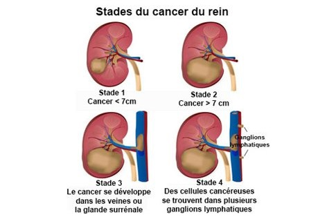

Le cancer du rein
Definitions
Le cancer
Le cancer est une tumeur (masse tissulaire anormale) liee a la proliferation anarchique et indefinie d’un clone cellulaire dit cancereux conduisant a la destruction du tissu original, a l’extension locale, regionale et generale de la tumeur et a la mort de l’individu en l’absence de traitement.
Le rein
Les reins sont au nombre de deux : l'un droit, l'autre gauche. Ils sont situes dans la cavite abdominale de part et d'autres de la colonne vertebrale dans la loge renale.
Le bord interne de chaque rein est creuse d'une cavite profonde de 3cm environ, le sinus du rein ; l'orifice de cette cavite est le hile. C'est au niveau du hile que les vaisseaux du rein penetrent dans celui-ci et que les voies excretrices de l'urine en sortent.

Facteurs favorisants
Terrain genetique.
Exposition professionnelle au cadmium.
Transplantation renal.
Signes cliniques
Hematurie.
Douleur lombaire.
Masse lombaire.
Autres : alteration de l'etat general, œdeme des membres inferieurs, metastases, ganglions, syndrome paraneoplasique (hepatomegalie, fievre, hypertension arterielle).
Examens complementaires
Echographie renale : masse renale deformant les contours du rein.
IRM : meilleur examen pour extension veineuse.
Scanner abdominal : meilleur examen pour diagnostic et extension.
Biologie : NFS, VS, fonction renale.
Bilans d'extension
Extension veineuse : Echo-Doppler ou IRM.
Extension metastatique : scanner thoracique, scanner cerebrale, scintigraphie osseuse.
Evaluation cardiovasculaire.
Evolutions
Extension locale puis regionale.
Extension endoveineuse.
Metastases.
Traitements
Nephrectomie elargie ou partielle.
Immunotherapie : cancer metastase, adjuvant.
Radiotherapie : palliative sur douleurs osseuses.
Chimiotherapie : tres peu efficace.
Voir aussi :
L'appareil urinaire
Module Cancerologie
Module Urologie Nephrologie